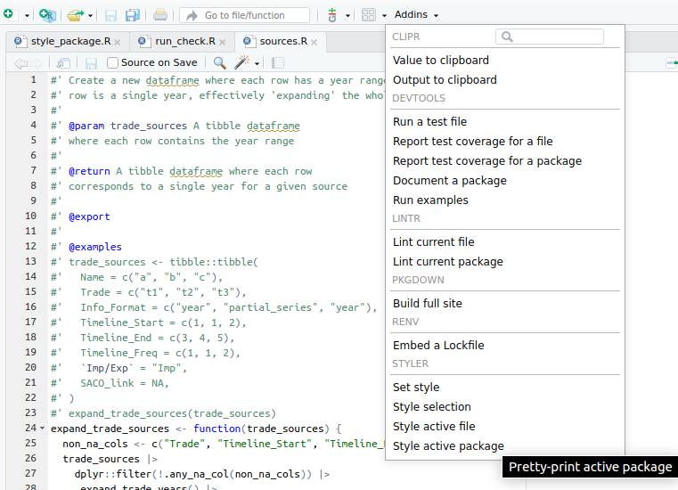

8 Project structure
It seems clear that even though we would work fine with bare R scripts that are run directly, when working on a large project it makes sense to have some kind of file structure, to keep everything organized. You can build your ad-hoc file structures, and you could probably come up with something rather simple. Here, instead, we will focus on using the standard structure of an R package. This is a standard everyone has to follow if they want their projects to turn into packages which can be publicly downloaded by anyone from the CRAN repositories. Just the same way you do, e.g., install.packages(tidyverse) to install all Tidyverse packages, if you follow this standard R package structure, you can upload your package and one could do install.packages(your_package) the same way.
Even if you do not want to upload a package, there are still advantages if you follow this structure. This is the one we will follow, so the rest of this section will try to explain its different parts, that will all become part of our workflow.
This is the whole structure of an R package:
Luckily, there are a lot of files there that you do not need to know about, at least for now, so we will try to explain the most important ones in the next sections.
There is a whole R packages book which I followed myself to setup the basics for our project. It is very well written and available for free online, so if you are interested in knowing more about R packages and their project structure, I recommend checking the book.
8.1 Virtual environments with renv
We just mentioned we were going to use the R package structure, and it seems R package developers do not use renv… Or do they? At least they do not seem to include renv related files in their package repositories… Well, why should we use it then? While writing this guide I was a bit confused myself about mixing both things, but my conclusion was that it just does not hurt in any way, renv just makes things easier without apparent drawbacks (do tell me if you know of any). When creating packages, you want to make sure they work on fresh installations, i.e., computers that do not have anything unnecessary installed. The package creation process as we will use it, does not need to know anything about renv, so we should be fine. The packages use their own file called DESCRIPTION which includes information about the other packages it needs as dependencies, as we will see later on. So we can just try to benefit from using virtual environments.
OK, but what are virtual environments? This is a fancy term, but its practical meaning is quite simple. First consider the following:
- If you are not using them, it means you just have a global R installation in your computer, and whenever you install a package, it is installed globally.
- If you want to run someone’s code and they use a bunch of packages that you usually do not, you would have to install all of them to be able to run their code, and these would mix with all your other packages. If you want to uninstall them after that, you would have to do a lot of manual work to make sure you know all of them (some package dependencies could have also been installed, and you cannot be sure if they were only used for these packages or also some other package that you already had).
- If you want to write some code that uses some packages, and you want another person to run it, you should make a list of the packages used only in this project, because they should not have to install any other packages you have from other projects but are not necessary here. If you do not even make this ‘package list’, the other person should have to go through your whole code or run it and install a new package every time the code fails because of a missing one. Overall, this is a poor experience.
Virtual environments try to fix this. Essentially, they provide a ‘local’ installation of packages, that are only visible inside your project, and do not get mixed at all with those from your global R installation or from other individual projects. In practice, a virtual environment is just a folder containing installed packages, isolated from the folder that contains your global R installation. It is like having several different R installations, each one with their own packages and versions.
Chances are you follow this guide with an existing repository that is already using renv (then you can skip the renv::init() step). If this were not the case, open an R prompt in the root directory of your project and run inside the prompt:
renv::init()It will probably ask to close and reopen a clean prompt. After that, every time we open an R prompt inside our project, it will automatically use renv to work within a virtual environment. If you use renv for the first time but on a project that already uses it, when you open the R prompt in its root directory, the renv package will be installed automatically.
Now that we have renv, we can, for example, install a testing package with install.packages("testthat") and this will not be a global installation, which means it will only work inside this project. This is a way of isolating your project dependencies and making your projects reproducible, by letting others know exactly which packages your code needs to run, and not add unnecessary ones that you may have because of other projects, as we mentioned previously.
The ‘list’ of required packages for the project, along with their versions, which is used by renv to manage the virtual environment, is in a file called renv.lock. After installing new packages, this file is not updated automatically and we have to do it manually by running
renv::snapshot()This will update the renv.lock file with all the packages renv finds are used in your code. If for some reason you need to install a package not explicitly used in the code, this may fail to recognize it. In that case, you should instead explicitly call renv::snapshot(type="all") to force every package in your renv environment to be added to renv.lock. You should push this file to the repository. If someone else wants to reproduce your code, then they may have to run
renv::restore()which will install any packages from renv.lock that they may still not have installed, but again, only on a project level, not conflicting with their global R installation. If you use GitHub with others, then you might also need to do this every time you pull remote changes and someone else has included a new package, so that you are then up to date with them. In any case, when opening the R shell, it will probably remind you that there are missing packages in your virtual environment with a message:
And this is basically all you need to start using a virtual environment, keeping in mind the commands
renv::snapshot(): add new required packages torenv.lockfilerenv::restore(): install packages fromrenv.lockthat you do not have yet
I wrote this introduction to renv by reading their own package documentation. If you want to learn more about it, you can read it yourself at their package website.
While this is not directly related to renv usage, I wanted to highlight here that in Windows you may have errors trying to install some R packages. Most of the times this may be related to missing operating system dependencies or commands. In Windows this should be easily fixable by installing the version of Rtools that matches with your R version. After selecting the version you can download it by clicking the first installer link. After installing Rtools, you can try again to install the R packages you wanted.
8.2 Writing code
Looking back at the package’s file structure, it is in the R/ directory where we will put all the main code. The R files stored here must not contain any top-level code, that is, it must all be inside functions. We can add more than one function in each file if they are somehow related, but there must not be too many either. If a file becomes too large and it has several functions inside, consider splitting it into shorter files.
Take the following code as an example, written by our colleague Justin (you do not have to understand the code, you can keep reading). We save it in R/sources.R.
#' Create a new dataframe where each row has a year range into one where each
#' row is a single year, effectively 'expanding' the whole year range
#'
#' @param trade_sources A tibble dataframe
#' where each row contains the year range
#'
#' @returns A tibble dataframe where each row
#' corresponds to a single year for a given source
#'
#' @export
#'
#' @examples
#' trade_sources <- tibble::tibble(
#' Name = c("a", "b", "c"),
#' Trade = c("t1", "t2", "t3"),
#' Info_Format = c("year", "partial_series", "year"),
#' Timeline_Start = c(1, 1, 2),
#' Timeline_End = c(3, 4, 5),
#' Timeline_Freq = c(1, 1, 2),
#' `Imp/Exp` = "Imp",
#' SACO_link = NA,
#' )
#' expand_trade_sources(trade_sources)
expand_trade_sources <- function(trade_sources) {
non_na_cols <- c("Trade", "Timeline_Start", "Timeline_End", "Timeline_Freq")
trade_sources |>
dplyr::filter(!.any_na_col(non_na_cols)) |>
.expand_trade_years() |>
dplyr::mutate(
Name = dplyr::if_else(
Info_Format == "year", paste(Name, Year, sep = "_"), Name
),
ImpExp = `Imp/Exp`,
In_Saco = as.integer(!is.na(SACO_link)),
)
}
.expand_trade_years <- function(trade_sources) {
trade_sources <- dplyr::mutate(trade_sources, No = dplyr::row_number())
trade_sources |>
dplyr::group_by(No) |>
tidyr::expand(Year = seq(Timeline_Start, Timeline_End, Timeline_Freq)) |>
dplyr::inner_join(trade_sources, by = "No")
}
.any_na_col <- function(cols_to_check) {
dplyr::if_any(dplyr::all_of(cols_to_check), is.na)
}In this sample code there are some things to keep in mind:
- All the code is written inside functions, and there are three of them. The name of two of them starts with a dot. This is a convention for private functions. Private functions are just helpers that are used in other functions from the same file, they do not need to be used from outside.
- The functions that are not private, are then called public, and those are the ones that we want to ‘export’, in the sense that we want to allow for them to be used from outside this file. In our
sources.Rexample, the first function is public. - The public function has a large commented section before it, each line starting with
#'. This is a special type of comment and it is considered documentation. Every public function must be documented in the same way (more on this special function documentation in the next section). The private functions can be introduced by explanatory comments if you consider it necessary, but they should be normal comments instead (starting with just#, without the single quote).
The most important take from here anyway is that these files should contain all the code inside functions and nothing outside them.
8.3 Function documentation
The special commented section seen in the previous example will be used by a package called roxygen2. We have to follow this exact syntax, so that this package can automatically build a really neat documentation of our package for us. Let’s try to understand its basic structure. For reference, these were the different parts:
- A small description of the function, nothing else.
#' Create a new dataframe where each row has a year range into one where each
#' row is a single year, effectively 'expanding' the whole year range- A small description of each parameter the function receives. It should be like:
#' @param param_name_1 Description of param 1
#' @param param_name_2 Description of param 2
#' ...As you see here I think it is OK to add line breaks in between, as long as each parameter starts with @param.
#' @param trade_sources A tibble dataframe
#' where each row contains the year range- A small description of the value the function returns. It should start with
@returns.
#' @returns A tibble dataframe where each row
#' corresponds to a single year for a given source- A simple line containing
@exportto indicate the function can be used in the package, i.e., it is public.
#' @export- A ‘code’ section of examples to illustrate the function’s behavior. It must start with
@examples, and after that you can write usual R code. When this is processed, it automatically runs the code and adds some lines with its output in the documentation.
#' @examples
#' trade_sources <- tibble::tibble(
#' Name = c("a", "b", "c"),
#' Trade = c("t1", "t2", "t3"),
#' Info_Format = c("year", "partial_series", "year"),
#' Timeline_Start = c(1, 1, 2),
#' Timeline_End = c(3, 4, 5),
#' Timeline_Freq = c(1, 1, 2),
#' `Imp/Exp` = "Imp",
#' SACO_link = NA,
#' )
#' expand_trade_sources(trade_sources)These options are enough to get us started with a nice documentation. In the Writing articles section we will learn how to generate and see this documentation. In this example, it would look something like this (note the autogenerated example code output):
8.4 Package data
Some of the data we have to work with might be very large. If the final datasets we want to produce are too large, we can’t directly include them in the package because there are size limits and recommendations. In that case, we will have to export them as functions. In this way, the package itself won’t contain the output dataset, but the user will have to generate it through running a function, so it will be stored in their own computer. An example of this is our function get_wide_cbs(). Unless we generate the dataset ourselves in the function, we will also probably be using a very large input dataset which we just process somehow. For reading large datasets, see the relevant Reading large files section.
From now on, in this section we assume that you have some small datasets (maybe up to a couple of megabytes) as inputs. We will go through both public and private ones. The public ones are those that you want to export to users of your package, and the private ones are only intended for being used in your own code.
Let’s start with the exported datasets. The whole aim of this is to allow users (or even our own code) to access them easily by writing my_pkg::my_dataset. In order to achieve this, you must follow these steps:
Create a file in
data-raw/my_dataset.R. Scripts inside thedata-rawfolder aren’t included as part of the package. They will just be helpers for us to generate the actual data. Inside this file we do some processing and, assuming we have a variable calledmy_dataset, we end the script by callingusethis::use_data(my_dataset). This will automatically create an.rdafile indata/my_dataset.rda. We have to manually run this script. After that, we can now refer to the dataset asmy_pkg::my_dataset.You can directly create your data in the script
data-raw/my_dataset.R, or you can make it rather short by just importing some data from another raw file. In this case, I recommend having the raw file as a CSV in theinst/extdatafolder, say,inst/extdata/my_raw_dataset.csv. This is for accessibility, so that everyone can see where this data comes from regardless of whether they know how to read an.rdafile or not. Adata-raw/my_dataset.Rscript could then look like:
my_dataset <- here::here("inst", "extdata", "my_raw_dataset.csv") |>
readr::read_csv()
usethis::use_data(my_raw_dataset, overwrite = TRUE)Every time you introduce some change in the raw CSV file, you would have to run this script again. The overwrite = TRUE is exactly for this purpose, so that the my_dataset.rda file is overwritten with the updated data.
- Document your dataset. In the previous section we learned how to document functions. Datasets aren’t functions, but they’re documented very similarly. We start by creating a file
R/my_dataset.R. Note that the name matches that ofdata-raw/my_dataset.R. It doesn’t need to match that of the variable used withusethis::use_data(), but they should match each other. You can define more than one dataset in the same file if you think they’re related, so then you can also use a more general name for the file. This is how you would document your dataset, also usingroxygen2comments:
#' Title of my dataset
#'
#' My description of my dataset
#'
#' @format
#' What my dataset is. I would ideally make it a tibble and explain all
#' columns. My dataset contains the following columns:
#' - `column_1`: My explanation of column 1.
#' - `column_2`: My explanation of column 2.
#' - `column_3`: My explanation of column 3.
#'
#' @source Where my data comes from. Maybe an external link if you have one.
"my_dataset"As you can see, we use roxygen2 style comments right before a line containing a character vector with the name of our dataset, in this case "my_dataset". Now your dataset will be correctly documented after doing devtools::document() and pkgdown::build_site()/pkgdown::build_reference().
Now we should talk about internal data. This is data that only the developers of the package themselves use throughout the code. This could be either actual tibble datasets or just bare constants. Any value that doesn’t change and you would like to share throughout the whole package code applies for this. Creating internal data is quite similar to exported data:
- Create a file
data-raw/constants.Rif it doesn’t already exist. For internal data, all of them should be defined in this same file. The file could look like this:
my_constant_number <- 0.65
my_constant_name <- "name"
my_constant_tibble <- tibble::tribble(
~col_1, ~col_2,
1, 2,
3, 4
)
usethis::use_data(
my_constant_number,
my_constant_name,
my_constant_tibble,
internal = TRUE,
overwrite = TRUE
)As you can see, you can pass more than one variable to usethis::use_data(). We should include all our constants in the same call to this function. In addition, it must also include the internal = TRUE option to identify this as internal data.
- Manually run the previous file. This will create a single file in
R/sysdata.rda, which contains all your internal data. You can now refer to these data the same way as for exported data, e.g.,my_pkg::my_constant_tibbleormy_pkg::my_constant_number, but these will only be available through the package’s code, and won’t be exported to the package users. Again, any time you want to add new internal data or modify the existing entries, you will have to manually run that script again.
Whether some data is worth being exported as part of the package or just used as internal, this is your decision, but now you know how to implement both. This section was heavily inspired by the Data chapter in the R Packages book, which I recommend reading if you want to dive deeper.
8.5 Writing tests
So we just wrote a function, we are done with it, we now move to another function… No. You probably thought that we should check somehow that this function is indeed correct and it does what you expect. Right now it would be easy to just load the function in an R prompt and try some examples on it, but what if the next month someone has to make a change in this code? They would have to do this manual testing again to make sure they did not break any functionality. What if they need to change dozens of functions? How much time will they spend on testing all of them?
I think you can understand that this is really time consuming and that there is a better way. Tests can be automatized. We can write some tests whenever we create a new function, that together prove the function does what we expect, and if later on we add some changes to the function, we already have a test that can be run automatically to see if the function is still correct. Of course, this is not completely accurate. Maybe when we changed the function, some of its functionality was also changed, so the test is not accurate anymore and has to be tweaked as well, to represent what we really want. But this is still much less work than always testing the function manually in an R prompt, and eventually you just get used to it.
The package that is used to write tests and is well integrated into the R package creation workflow is testthat. We will be using it to write our automated tests. Again, looking at the structure of an R package, the tests go into (surprise!) the directory tests/. In this directory there is a file called testthat.R that setups testthat and should not be changed, and the actual tests that we write will go into the tests/testthat/ subdirectory. The convention is to name the test files the same way as the R files but with a test- prefix. In our case, for example, if we have an R file in R/sources.R, then our test file should be tests/testthat/test-sources.R. Let’s see how one of our tests could look like:
library("testthat")
test_that("trade source data is expanded from year range to single year rows", {
trade_sources <- tibble::tibble(
Name = c("a", "b", "c", "d", "e"),
Trade = c("t1", "t2", "t3", NA, "t5"),
Info_Format = c("year", "partial_series", "year", "year", "year"),
Timeline_Start = c(1, 1, 2, 1, 3),
Timeline_End = c(3, 4, 5, 1, 2),
Timeline_Freq = c(1, 1, 2, 1, NA),
`Imp/Exp` = "Imp",
SACO_link = NA,
)
expected <- tibble::tibble(
Name = c("a_1", "a_2", "a_3", "b", "b", "b", "b", "c_2", "c_4"),
Trade = c("t1", "t1", "t1", "t2", "t2", "t2", "t2", "t3", "t3"),
Info_Format = c(
"year", "year", "year", "partial_series", "partial_series",
"partial_series", "partial_series", "year", "year"
),
Year = c(1, 2, 3, 1, 2, 3, 4, 2, 4),
)
actual <-
trade_sources |>
expand_trade_sources() |>
dplyr::ungroup()
expect_equal(
dplyr::select(actual, Name, Trade, Info_Format, Year),
expected
)
})Again, you do not have to understand the whole code. Just note that we use two functions from the testthat package:
testthat::test_that: this is the main function used to delimit what a test is. It receives a text description about what the test is checking, and a body containing all the code of the test itself.testthat::expect_equal: this is just one of the many utilitiestestthatbrings to actually assert things in the test’s code. It is probably the most general assert, and it just checks if everything is identical in both arguments, including internal object metadata, not just “appearance” (what you may see when printing an object). You can look for more testing utility functions in their documentation.
So now we have a test. How do we execute it? It is not recommended to run the test as usual R code (e.g. run the file as a script). Instead, there are some functions provided by testthat for running tests. Here are some of them:
testthat::auto_test_package(): This one will run all the tests in the package the first time, and after that it will not stop running, but wait for code changes. This means that whenever you ‘save’ a test file, it only reruns all the tests in that file. This is extremely useful when you are actively writing some tests, so that you can get fast feedback.testthat::test_file(): This one receives as argument the path to a test file, and it only runs the tests inside it. For example, we could run in our casetestthat::test_file("tests/testthat/test-sources.R").testthat::test_dir(): In this case, this could be different to running all the tests if we had e.g. some subdirectories in thetests/testthatone. If there was a subdirectorytests/testthat/sourceswith many test files related to sources, we could runtestthat::test_dir("tests/testthat/sources")and all test files inside this directory would be executed.testthat::test_package(): This is the most general one. It just runs all the tests in the project.
All of these can be useful to run tests while you are actively working on them. You are supposed to make all your tests pass, and as we will see in the next section, there are some more checks a package must pass to be valid (so that it can be publicly uploaded), but tests are definitely one of them.
8.6 R CMD Check
There is a standard tool that contains several steps (‘checks’) which every project that wants to be a package uploaded to CRAN repositories must pass. As part of our code workflow, you are also responsible to make this check pass, as we will also see in the Automatic checks on Pull Requests section. This check is known as ‘R CMD check’, and it is actually very easy to run:
devtools::check()The whole output of this call is rather long, since it lists all the different checks it makes, but at the end, if there are no issues, this is the output you should see:
OK, but if you just followed the steps in this guide and included our example code from the Writing code and Writing tests sections, the above check should not have ended successfully with 0 errors, and you probably see (among the really large output), some error like this:
The problem here is that before performing the check on your package, it must build it. And for that, it must know which other packages it has as dependencies. Again, if you just followed everything from here, we never got to do that, so your built package just does not include any other packages. To fix this, we must have a quick look at the DESCRIPTION file.
Package: whep
Title: What the Package Does (One Line, Title Case)
Version: 0.0.0.9000
Authors@R:
person("First", "Last", , "first.last@example.com", role = c("aut", "cre"))
Description: What the package does (one paragraph).
License: MIT + file LICENSE
Imports:
dplyr,
tidyr
Encoding: UTF-8
Roxygen: list(markdown = TRUE)
RoxygenNote: 7.3.2
Suggests:
knitr,
rmarkdown,
testthat (>= 3.0.0),
tibble,
ggplot2,
here,
googlesheets4
Config/testthat/edition: 3
VignetteBuilder: knitr
URL: https://eduaguilera.github.io/whep/In the above file, the Imports section is where we should make sure we have all dependencies for code which was saved specifically in the R/ directory. On the other hand, dependencies for code written in other places, such as tests/ or vignettes/ (we will see this one in the following Writing articles section), should be included in the Suggests section of the DESCRIPTION file. Together these two fields tell everyone which dependencies our package needs to work correctly. After adding these, you could run again devtools::check() and confirm that it does not fail anymore (at least no errors).
We will not go into detail as to which checks are being performed. We will all slowly learn about them whenever they show up as real issues in our code when running the check tool. Just keep in mind that one of the important points is that all the tests you write are also executed here, and the ‘R CMD check’ also fails if one of your tests fail. If you really want to know more about the checks, you can read, e.g., this detailed list.
8.7 Writing articles
If you ever got to check some popular R package website (e.g. dplyr), you may know there is a section called Articles at the top, and if you open one of them, you see what indeed looks like an article, mixing natural text and code rendering. This is ideal if you want to make guides about your package, or some kind of reports in general. As you can probably guess, this guide that you are reading was built the same way. Luckily this is already very well integrated with the R packages workflow, and we will learn how to make our own articles here easily.
Everything that we want to appear in this Articles section of the site, should be included in the vignettes/ directory of the package. And inside this directory, each file that ends with a .Rmd extension will be considered one article. The extension name stands for ‘R Markdown’, which is a mix of R code and Markdown text. If you do not know about Markdown you can start with, e.g., this intro. Following our previous example, we can create a file called trade-sources-coverage.Rmd with the following code 1 (again, thanks to Justin):
---
title: "Trade sources year coverage"
output: rmarkdown::html_vignette
vignette: >
%\VignetteIndexEntry{Trade sources year coverage}
%\VignetteEngine{knitr::rmarkdown}
%\VignetteEncoding{UTF-8}
---
```_{r, include = FALSE}
knitr::opts_chunk$set(
collapse = TRUE,
comment = "#>"
)
```
```_{r setup}
library(whep)
key_path <- here::here(Sys.getenv("GOOGLESHEETS_AUTH_FILE"))
googlesheets4::gs4_auth(path = key_path)
```
First we read the trade sources sheet and build a dataframe where each row accounts for one year.
```_{r}
# Step 1: Authentication
sheet_url <- "1UdwgS87x5OsLjNuKaY3JA01GoI5nwsenz62JXCeq0GQ"
# PART 1: trade_sources FOR TRADE
# Step 2: Rest of Program
expanded_trade_sources <-
sheet_url |>
googlesheets4::read_sheet(sheet = "Final_Sources_Trade") |>
expand_trade_sources()
```
Now we build some plots.
Plot showing years covered by `expanded_trade_sources`:
```_{r, fig.alt="Plot showing years covered by expanded_trade_sources"}
ggplot2::ggplot(
expanded_trade_sources,
ggplot2::aes(y = Trade, x = Year, fill = "lightblue")
) +
ggplot2::geom_tile(alpha = .8) +
ggplot2::theme_dark() +
ggplot2::labs(title = "Source Availability by Country") +
ggplot2::scale_fill_identity() +
ggplot2::facet_wrap(~Reporter, ncol = 1)
```The first part of this code, namely the following
---
title: "Trade sources year coverage"
output: rmarkdown::html_vignette
vignette: >
%\VignetteIndexEntry{Trade sources year coverage}
%\VignetteEngine{knitr::rmarkdown}
%\VignetteEncoding{UTF-8}
---
```_{r, include = FALSE}
knitr::opts_chunk$set(
collapse = TRUE,
comment = "#>"
)
```is metadata and should always be present (just change the article’s title). You see that just as in Markdown, we can write R code chunks inside triple backticks, but the difference here is that this code will be executed, and by default we will also be able to see its output in the rendered article.
The next chunk (with the "r setup" option) is used for some initialization code that you may need throughout the rest of the article. At the time of writing I do not really know the implications of writing the "r setup" option or writing this code in a normal R code chunk (without the option), but it is at least good practice. Note that the package being loaded is your own package (called whep in our case).
```_{r setup}
library(whep)
key_path <- here::here(Sys.getenv("GOOGLESHEETS_AUTH_FILE"))
googlesheets4::gs4_auth(path = key_path)
```The rest of the code provided is just some usual Markdown text intertwined with usual R code chunks. In the special case of code chunks with plots, we will get to see the actual plot in the rendered article, and the fig.alt option is necessary in order not to get an R CMD check warning, and will only be used as text which explains the rendered image for people using screen readers or in the case it cannot be displayed correctly in a browser.
Now that we have our R Markdown article, we would like to visualize it. There are at least two useful R commands for this. The first one creates the whole documentation website locally in our computers, and it automatically opens your browser on the site. This is simply:
pkgdown::build_site()We should now be able to see our article in the ‘Articles’ section. It should look something like the one you can see directly on this site at Trades sources coverage (with some additional plots).
After running this command once, there is no need to rerun it every time we want to see changes, since it takes a bit longer to run. We can instead use a simpler one
pkgdown::build_articles()which checks for code changes in articles and only reruns those that have changed. I am not completely convinced they are equivalent, since it seems at some point one failed and one worked for me, but if you are not doing something strange (like me building this guide and writing R Markdown inside R Markdown) it should probably work the same.
The pkgdown::build_articles() one could still fail with some error indicating that the package cannot be loaded. It most likely refers to your own package. Since you use code from your own package inside the R markdown, this package itself must also be installed. When running pkgdown::build_site(), I think the package is installed but only in a temporary directory for that execution, so maybe it does not work anymore when calling pkgdown::build_articles() after that. If this is your case, you may want to try installing your own package first via devtools::install(). Note that this assumes you do not change your package code (the one in R/ directory) while actively working on articles. If you do, you would have to reinstall your own package every time you change something in the R/ directory.
As mentioned in a previous section, also remember to include all package dependencies your article code uses in the Suggests part of the DESCRIPTION file, so that you do not get errors of packages not being found when building the articles or running R CMD check.
This way we can render our articles by default in HTML, which is what browsers use. Having your own site is perfect because you can keep it up to date, but in case you need it, you should also be able to export an article as PDF. For this to work, you first need a LaTeX distribution installed. If you are on Windows, you can try MiKTeX (maybe start from here). Remember to choose “Yes” when asked for “missing packages installation on the fly”, otherwise our PDF generation from R might fail. Once we have a LaTeX distribution installed, we can build a PDF from our article with just a single command:
rmarkdown::render("vignettes/my-vignette.Rmd", output_format = "pdf_document")The output PDF (probably as expected) does not look exactly like the one from the site, but it has its own style (LaTeX’s style). There are also other valid formats, you can look them up if you are curious, but I thought the PDF output format would be the most useful one besides the HTML for website generation.
8.8 Environment variables and secrets
When running code, you can sometimes customize some behavior by specifying the value of some variable to your needs. For example, maybe there is an option whose value is a number from 1 to 5, indicating the level of debugging (the amount of output you want to see in the console, so as to understand the code’s execution). A possible way of introducing this would be with what is known as an ‘environment variable’, which is just a value stored with a name in the ‘environment’ where your code runs (not an R variable, it is more related to the operating system). These should be loaded before the code starts running, and our package workflow allows us to do this quite easily, by creating a top-level file called .Renviron, which can include one variable per line, like this:
DEBUG_LEVEL=1
GOOGLESHEETS_AUTH_FILE=inst/google_cloud_key.jsonIt can be accessed from R code by using
Sys.getenv("NAME_OF_VARIABLE")You can also use environment variables for constants, or whatever you feel that could be used in several places. This file will be uploaded to the repository, so it is important that it does not contain any sensitive information (also known as ‘secrets’). I also introduced this section because in the example code for the Writing articles section, there is the line:
key_path <- here::here(Sys.getenv("GOOGLESHEETS_AUTH_FILE"))In that example, an Excel sheet must be read. When using the googlesheets4 package, it can automatically open a browser interactively and ask for your Google account credentials, but when running check tools, we want everything to work from beginning to end without human intervention. This is achievable by providing a secret token 2.
Since we must not include secret information in .Renviron, the workaround is to instead add just the secret file path as an environment variable and then read from it, so the .Renviron is uploaded to GitHub but the secret file, which according to our environment variable should be found in inst/google_cloud_key.json, is not uploaded. Instead, the file should be uploaded to another private storage service, so that only you have access to it.
In examples like this one, ideally every developer would create and use their own token. The specific case of the token in this example is out of the scope of this guide, but if you are interested you could probably start from this gargle package guide. Also, the here package was used above for easy file path referencing from the root directory of a project, so that paths are not hard-coded, and you can read more in their package site.
8.9 R code style and formatting
There are some conventions and good practices for how to write neat code in R. The most followed style guide is the Tidyverse style guide. You can read it or just skim through it to get a grasp of their conventions. The key is that most of them can be checked automatically. There are tools which conform to these standards and let you apply the necessary changes to the code by just clicking one button. Analogously, there are also ways to check whether a code is correctly following a style or not, without explicitly changing it. In the context of the Tidyverse style guide, these two points directly match with two R packages:
styler: it applies the Tidyverse style guide to a specific code, be it a chunk, a file or an entire project. For example, we could apply the style to the whole package by simply using the command:styler::style_pkg()Most code editors incorporate some way of doing this. Since you are most likely using RStudio, you can do it by finding the
styleroptions in the ‘addins’ drop-down:
When using
renv, it seems RStudio only shows in the ‘addins’ drop-down the options from packages included inrenv, so keep that in mind in case you want it in a different project, that is, ifstylerdoes not show up there, it means you do not have it installed in the currentrenvenvironment.An important thing to keep in mind is that the Tidyverse style guide states lines should have at most 80 characters, but the
stylerpackage cannot by itself try to separate a really long single line into several lines to match the 80 character limit. You must fix this anyway, and the usual way for thestylerto work is to first manually split some of the code into two lines, and then run thestyleragain, so it can now split the rest accordingly. For example, you have:call_my_incredibly_long_function(my_first_long_argument, my_second_long_argument, my_third_long_argument)In this case, if you use
stylerit may not change anything and still leave this code in a single line, but you can help it a bit by sending the arguments to the next line, like this:call_my_incredibly_long_function( my_first_long_argument, my_second_long_argument, my_third_long_argument)This does not conform to the standard yet, but now trying to use
styleragain, it should be able to understand what is going on and split the code accordingly. Depending on the length of the line, it may leave it like this (note the closing parenthesis goes in its own line):call_my_incredibly_long_function( my_first_long_argument, my_second_long_argument, my_third_long_argument )Or if the line was even longer, it would split each argument into its own line:
call_my_incredibly_long_function( my_first_long_argument, my_second_long_argument, my_third_long_argument, my_fourth_long_argument )Any of those should work now, because they successfully follow the 80 character per line limit. If you do not follow the limit, you would fail the
lintrcheck (see next point below).lintr: it checks whether the given code/file/project follows the Tidyverse style guide, without making any actual changes. You are responsible for making sure this check passes (probably usingstyleras explained above), since it will also be automatically checked on your Pull Requests (see the next section on this guide). The check we will use is:lintr::lint_package( linters = lintr::linters_with_defaults(object_usage_linter = NULL) )The default call would be as easy as
lintr::lint_package(). I will not go into detail about the specific option added here, but it is there to ignore warnings about undeclared global variables, which are false positives when usingdplyrcolumn names. For convenience, if you are following our example repository, you could find this call ininst/scripts/check_lint.R, so if you want to check everything you would just have to run this script.In the screenshot above you can see there are also options for
lintrchecks from Rstudio’s ‘addins’, but by default they perform thelintr::lint_package()call without any options. Remember we added one option to our check, so you should either find out how to change the default behavior or just run the script we included ininst/scripts/check_lint.R.
Again, as you can see in the screenshot, there are more things you can do directly from RStudio (like running tests or building documentation). In this guide I tried to provide a code editor agnostic approach for everything. Since I do not use RStudio myself, I am not particularly familiar with its functionalities, so if you think they may be helpful to you, you can check them yourself.
8.10 Reading large files
Many packages don’t work with data per se. Others need data, but their datasets are small enough to be directly included in the package (and thus the code repository). GitHub has a limit on file size of 100 MiB, but even adding such files will make working with the repository noticeably slow. My recommendation for us is to consider a file large if it has more than a couple of megabytes. Assuming our package needs to work with large files, we need to find a workaround that is not storing them in GitHub. After thinking about this for a while, I considered using the pins package. I encourage you to read through that Get started guide, since I won’t explain too much about this package itself, but rather how we implement it in our workflow.
A pins board is like a repository but for files. You can even store a version history of them. Here we assume that someone already created a board for you. If you just want to use a file someone else already added, you don’t need any of the following. See the documentation for whep_read_file(). However, if you need a new file that is still not uploaded, or a new version of an existing one, you’ll need to do these steps:
- Prepare a local version of your data. I created a script helper for us, which can be found in the
wheprepository. You have to fill your own local data path and a name for the data, run the script and follow the instructions. For example, I could set the following
::: {.cell}
prepare_for_upload(
"~/Downloads/Processing_coefs.csv",
"processing_coefs"
)
#> Creating new version '20250716T102305Z-f8189'
#> ℹ 1. Manually upload the folder /tmp/RtmpHFHNUO/pins-1f3c39c418e0/processi
#> ng_coefs/20250716T102305Z-f8189 into your board. Folder path copied to you
#> r clipboard.
#> ℹ 2. Add the corresponding line
#> - processing_coefs/20250716T102305Z-f8189/
#> in _pins.yaml at the end of the 'processing_coefs:' section
#> ℹ 3. If you want the package to use this version, add a new row to whep_in
#> puts.csv if it's a new file or update the version in the existing row. The
#> version is 20250716T102305Z-f8189.:::
- A temporary local folder is created whose name is the data version. You must upload this folder inside the one with the data’s name in the public board, assuming you have write access.
::: {.cell} ::: {.cell-output-display} ::: :::
- You must add one line to the
_pins.yamlfile in the root folder of the board, like it’s specified in the instructions. This is an internal file that thepinspackage uses to keep track of files and versions.
::: {.cell} ::: {.cell-output-display} ::: :::
- To use the version in the next package release, you must also update the version inside the
whep_inputs.csvfile:
alias,board_url,version
...
processing_coefs,https://some/url/to/_pins.yaml,20250716T102305Z-f8189
...And now you’re done. You added a new file or a new version, and you can now access it from the code by using the whep_read_file() function.
If you’re wondering why there are manual steps in this process and the script doesn’t automate everything, it’s because our storage service is hosted by a Nextcloud server, and the easiest way to interact with it from outside is having a synced version of the whole storage locally. I thought some people might not be able to afford that, and since we don’t have to upload new data files often, I decided a few manual steps wouldn’t hurt that much.
8.11 Automatic checks on Pull Requests
By this point we assume you are already done with all your new code, you documented and tested it, or perhaps you just created some report in the form of an article. As we have seen in the Git intro, it is now time to create a Pull Request so that someone else reviews what you have done. But when you create the Pull Request, our workflow is designed so that two checks are run automatically on GitHub, each time you push your changes to a branch which has an open Pull Request:
- First, the R CMD check is performed. We have seen in a previous section how you can run it locally, so you should have made sure it outputs no errors. Otherwise, you will see this step failing.
- Then, a linting check is performed. We have also seen how to autoformat your code, so that it follows the R code styling standards, and how to make sure that it is indeed well formatted. Otherwise, you will see this step failing.
If any of the steps above fail, you will see something like this in your PR page:
Otherwise, if both checks succeeded, you will see something like:
Overall, you should be able to see this at the bottom of the PR:
In case you are wondering, both checks we mentioned before are actually done in a single GitHub automatic step (these steps are called ‘GitHub actions’), so it should say ‘1 successful check’ instead of ‘2 successful checks’. However, there is an additional GitHub action there, which essentially just updates the documentation site (only when the PR is actually merged into the main branch). This is not relevant to you as a developer but it makes the overall workflow easier, since the project documentation is automatically updated without any more human intervention. If you want to know more about this automatic site update you can check this section from the R Packages book.
Recall that for a PR to be accepted and merged into the main branch, it must also be reviewed by another developer. A good practice would be to make sure the GitHub checks pass before even asking for someone’s reviewing, because if any check failed you most likely need to add more code changes to fix them, so some of the code the reviewer could have checked before could become obsolete, and they would have to read it again, so we better avoid that.
If you copy it, please remove the _ from starting code block lines, e.g., change
```_{r, ...}to```{r, ...}. I cannot render R Markdown code properly inside an R Markdown file itself in this guide, because it tries to execute the code block anyway, and this is a workaround so that this guide renders properly. Do tell me if you know of a correct way to handle this.↩︎For educational purposes I won’t change anything from this explanation in the guide. However, recently I found out that the token is not needed when you’re reading public files. For this to work automatically we only have to call
googlesheets4::gs4_deauth()before reading the public file.↩︎